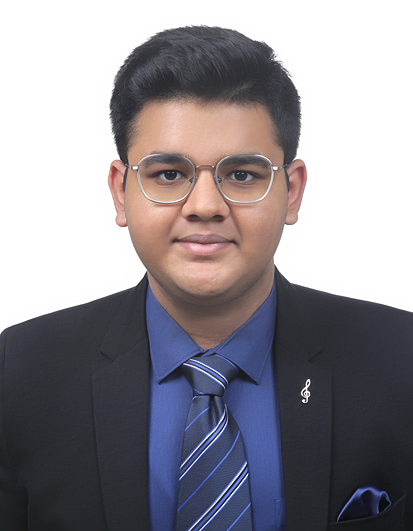

Indian Institute of Management Bangalore (IIMB)
Degree: Bachelor of Business Administration (BBA), Digital Business and Entrepreneurship
Timeline: 2025 - 2028
Student | Shaheed Bhagat Singh College | IIM Bangalore (BBA DBE) | GDGPS'2025 | Dual Degree

Ambitious and results-driven student pursuing dual degrees at Shaheed Bhagat Singh College, Delhi University (B.A. Economics) and IIM Bangalore (BBA in Digital Business & Entrepreneurship). As a former Head Boy and an active ecosystem builder, I thrive at the intersection of strategic leadership and entrepreneurial innovation.
My journey is defined by a passion for solving real-world problems. With a consistent track record of academic excellence from high school to university, I aim to leverage my background in economics and digital business to build scalable, impactful ventures.
In addition to my academic pursuits, I actively engage in case competitions, consulting projects, and research initiatives. By applying theoretical frameworks to practical business scenarios, my goal is to continually bridge the gap between economic policy, youth empowerment, and cutting-edge digital innovation.
Degree: Bachelor of Business Administration (BBA), Digital Business and Entrepreneurship
Timeline: 2025 - 2028
Degree: Bachelor of Arts (B.A.), Economics (Major) & English (Minor)
Timeline: 2025 - 2028
Grade: 9 SGPA (Semester 1)
Class XII (Commerce) | Passed in 2025
Class X (Secondary School Examination) | Passed in 2023